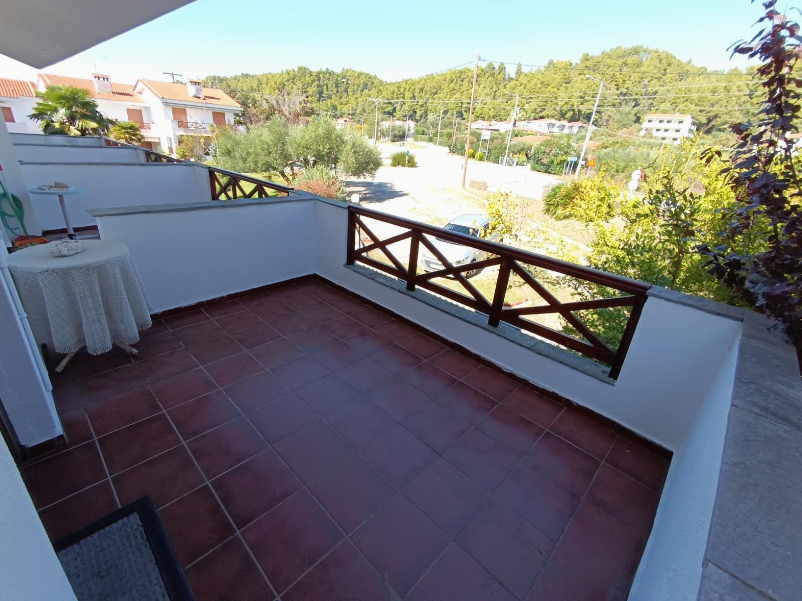

Listing preview · Ref. 1111
Corner maisonette in Kassandra
Kassandra, Halkidiki, Greece
€195,000
Price supplied for review
- Bedrooms
- 3
- Bathrooms
- 2
- Net interior
- 128.18 m²
- From the sea
- 250 m
About the property
This self-contained corner maisonette in Kassandra has 128.18 m² of net interior space across three levels and an attic, excluding the balconies. It has a living room, a kitchen, three bedrooms and two bathrooms.
The home is sold fully furnished and includes an electric stove, two refrigerators, air conditioning and a washing machine. It has working radiators, an alarm system throughout and new insect screens. The exterior was repainted in summer 2026.
The private front garden has a lawn, trees and a barbecue. There is also a rear yard, three balconies and an open outlook. The designated parking space is recorded in the property contract, according to the listing. The sea is about 250 m away.
The two entrances make it worth exploring a layout with separate living areas. Ask an engineer and a lawyer to check whether a division into two homes would be feasible and permitted.
Features
- Three levels and an attic
- Three balconies
- Private front garden with lawn, trees and barbecue
- Rear yard
- Two entrances
- Designated parking space
- Open outlook
- Fully furnished with appliances
- Air conditioning
- Working radiators
- Alarm system throughout
- New insect screens
- Exterior repainted in summer 2026
This property page is for review only. The energy rating has not yet been confirmed.
Take a checklist for the home, the surroundings and the paperwork.